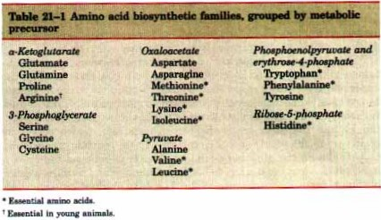
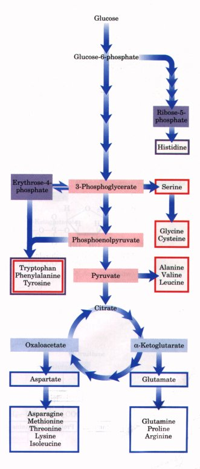
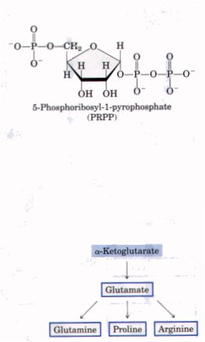
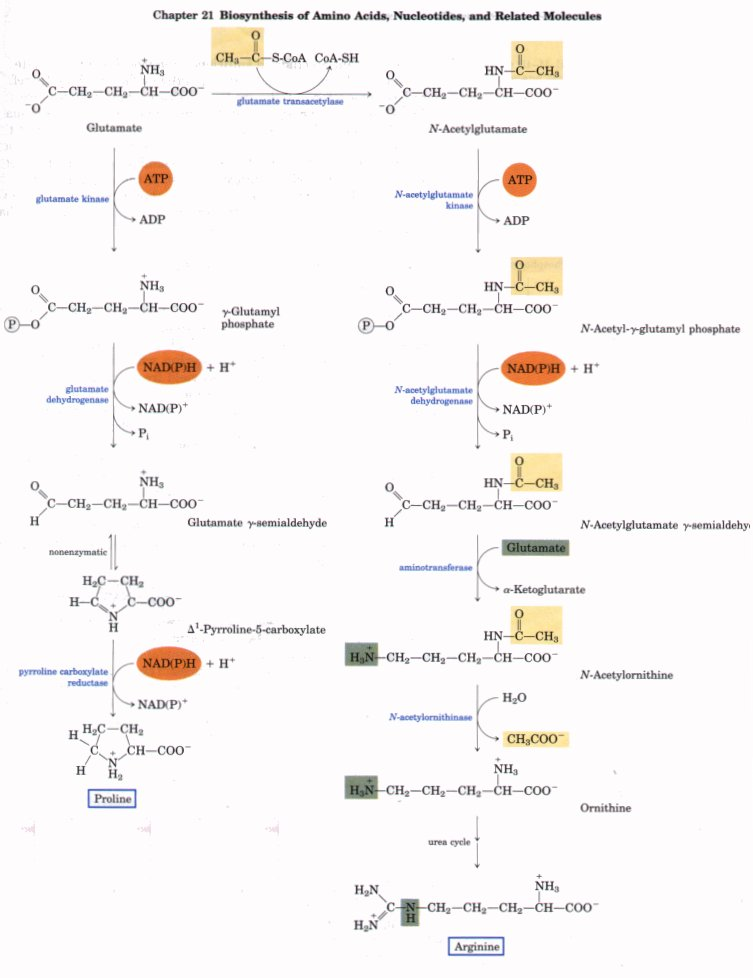
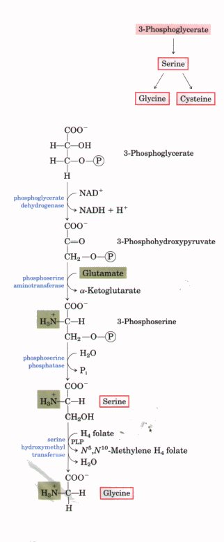
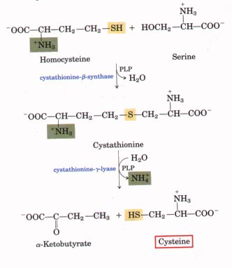
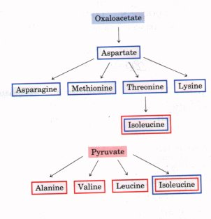

| All amino acids are derived from
intermediates in glycolysis, the citric acid cycle, or
the pentose phosphate pathway (Fig. 21-8). Nitrogen
enters these pathways by way of glutamate and glutamine.
Some pathways are simple, others are not. Ten of the
amino acids are only one or a few enzymatic steps removed
from their precursors. The pathways for others, such as
the aromatic amino acids, are more complex. Different organisms vary greatly in their ability to synthesize the 20 amino acids. Whereas most bacteria and plants can synthesize all 20, mammals can synthesize only about half of them (see Table 17-1). Those that are synthesized in mammals are generally those with simple pathways. These are called the nonessential amino acids to denote the fact that they are not needed in the diet. The remainder, the essential amino acids, must be obtained from food. Unless otherwise indicated, the pathways presented below are those operative in bacteria. A useful way to organize the amino acid biosynthetic pathways is to group them into families corresponding to the metabolic precursor of each amino acid (Table 21-1). This approach is used in the detailed descriptions of these pathways presented below.  |
 Figure 21-8 Overview of amino acid biosynthesis. Precursors from glycolysis (red), the citric acid cycle (blue), and the pentose phosphate pathway (purple) are shaded, and the amino acids derived from them are boxed in the corresponding colors. [The same device-color-matching precursors with pathway end products-will be used in illustrations of the individual pathways (Figs. 21-9 through 21-17).] |
In addition to these precursors, there is a notable intermediate that recurs in several pathways: phosphoribosyl pyrophosphate (PRPP). PRPP is synthesized from ribose-5-phosphate derived from the pentose phosphate pathway (see Fig. 14-22), in a reaction catalyzed by ribose phosphate pyrophosphokinase:
Ribose-5-phosphate + ATP  5-phosphoribosyl-1-pyrophosphate + AMP
5-phosphoribosyl-1-pyrophosphate + AMP
Ribose phosphate pyrophosphokinase is allosterically regulated by many of the biomolecules for which PRPP is a precursor. PRPP is an intermediate in tryptophan and histidine biosynthesis, with the ribose ring contributing several of its carbons to the final structure of these amino acids. It is also of fundamental importance in the biosynthesis of nucleotides, as we shall see later in this chapter.
| The biosynthesis of glutamate and
glutamine was described earlier in this chapter. The
formation of proline, a cyclized derivative of glutamate,
is shown in Figure 21-9. In the first reaction, ATP
reacts with the γ-carboxyl group of glutamate to form an
acyl phosphate, which is reduced by NADPH to form
glutamate γ-semialdehyde. This intermediate is then
cyclized and reduced further to yield proline. Arginine is synthesized from glutamate via ornithine and the urea cycle (Chapter 17). Ornithine could also be synthesized from glutamate γ-semialdehyde by transamination, but the cyclization of the semialdehyde that occurs in the proline pathway is a rapid spontaneous reaction that precludes a sufficient supply of this intermediate for ornithine synthesis. The biosynthetic pathway for ornithine therefore parallels some steps of the proline pathway, but includes two additional steps to chemically block the amino group of glutamate γ-semialdehyde and prevent cyclization (Fig. 21-9). At the outset the α-amino group of glutamate is blocked by acetylation in a reaction involving acetyl-CoA, and after the transamination step the acetyl group is removed to yield ornithine. Most of the arginine formed in mammals is cleaved to form urea, a process that depletes the available arginine and makes it an essential amino acid in young animals that require higher amounts of amino acids for growth. |
 |

| The major pathway for the formation of serine
is shown in Figure 21-10. In the first step the hydroxyl
group of 3-phosphoglycerate is oxidized by NAD+ to yield
3-phosphohydroxypyruvate. Transamination from glutamate
yields 3-phosphoserine, which undergoes hydrolysis by
phosphoserine phosphatase to yield free serine. The three-carbon amino acid serine is the precursor of the twocarbon glycine through removal of one carbon atom by serine hydroxymethyl transferase (Fig. 21-10). Tetrahydrofolate is the acceptor of the β-carbon atom of serine during its cleavage to yield glycine. This carbon atom forms a methylene bridge between N-5 and N-10 of tetrahydrofolate to yield N5,N10methylenetetrahydrofolate (see Fig. 17-19). The overall reaction, which is reversible, also requires pyridoxal phosphate. In the liver of vertebrates, glycine can be made by another route (the reverse of the reaction shown in Fig. 17-23b), catalyzed by the enzyme glycine synthase: CO2 + NH4+ + NADH + H+ +
N5,N10-methylenetetrahydrofolate In mammals, cysteine is made from two other amino acids: methionine furnishes the sulfur atom and serine furnishes the carbon skeleton. In a series of reactions the -OH group of serine is replaced by an -SH group derived from methionine to form cysteine. In the first reaction methionine is converted into S-adenosylmethionine (see Fig. 17-20). After the enzymatic transfer of the methyl group to any of a number of different acceptors, S-adenosylhomocysteine, the demethylated product, is hydrolyzed to free homocysteine. Homocysteine next reacts with serine in a reaction catalyzed by cystathionine β-synthase to yield cystathionine (Fig. 21-11). In the last step cystathionine-γ-lyase, a PLP-requiring enzyme, catalyzes the removal of ammonia and cleavage of cystathionine to yield free cysteine. |
 Figure 21-10 Biosynthesis of serine from 3-phosphoglycerate and the subsequent conversion of serine into glycine. Glycine is also made from CO2 and NH4+ by the action of glycine synthase, which uses N5,N10-methylenetetrahydrofolate as methyl group donor (see text).  Figure 21-11 Biosynthesis of cysteine from homocysteine and serine. |

The amino acids methionine, threonine, lysine, isoleucine, valine, and leucine are essential amino acids. The biosynthetic pathways for these amino acids are complex and interconnected. In some cases there are significant differences in the pathways present in bacteria, fungi, and plants. The bacterial pathways are outlined in Figure 21-12 (pp. 702-703).
Aspartate gives rise to methionine, threonine, and lysine. Branch points occur at aspartate-β-semialdehyde, an intermediate in all three pathways, and at homoserine, a precursor of threonine and methionine. Threonine, in turn, is one of the precursors of isoleucine. The valine and isoleucine pathways share four enzymes. Pyruvate gives rise to valine and isoleucine in pathways that begin with the condensation of two carbons of pyruvate (in the form of hydroxyethyl thiamine pyrophosphate; see Fig. 14-9) with another molecule of pyruvate (valine path) or with α-ketobutyrate (isoleucine path). The α-ketobutyrate is derived from threonine in a reaction that requires pyridoxal phosphate. An intermediate in the valine pathway, a-ketoisovalerate, is the starting point for a four-step branch pathway leading to leucine.